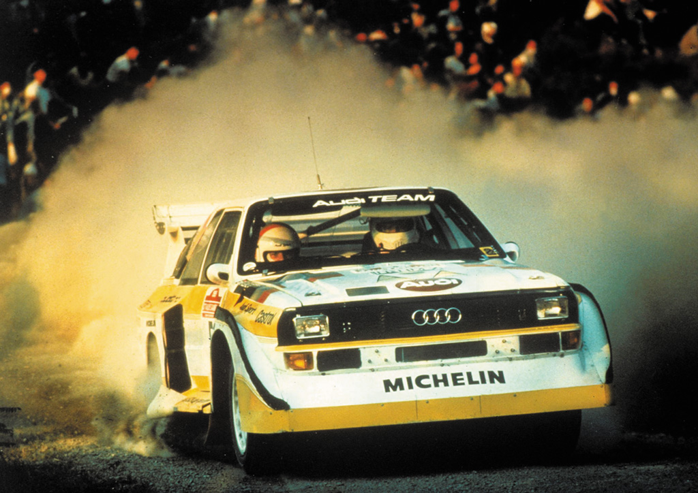

Audi Sport Quattro S1
One of the most prominent figure in automotive history

Audi Quattro S1 in 1985
Introduction
The Audi Sport Quattro S1 is a rally car that was introduced in 1984 as an update to the Audi Quattro and was used as a Group B rally car. It was introduced at the same time as the Peugeot 205 T16, Lancia Delta S4 and Ford RS200. The S1 featured an alloy 2,133 cc (130.2 cu in) (2.1 L) 20v DOHC engine slightly smaller than that of the Audi Quattro (in order to qualify for the 3-litre engine class after the scale factor applied to turbo engines).
Specifications
| Engine | Transmission | Weight | Power |
|---|---|---|---|
| 2.1 L I5 20v DOHC turbo | 5-speed manual | 1,090 kg (2,403 lb) | 350 hp (261 kW; 355 PS) |
History
- 1980: The original Audi Quattro was introduced at the Geneva Motor Show.
- 1981: The Audi Quattro began to compete in the World Rally Championship.
- 1984: The Audi Sport Quattro S1 was introduced as an update to the Audi Quattro.
- 1985: The Audi Sport Quattro S1 won the Pikes Peak International Hill Climb with driver Michèle Mouton.
- 1986: The Audi Sport Quattro S1 won the Pikes Peak International Hill Climb again with driver Bobby Unser.
- 1987: The Audi Sport Quattro S1 set a new record at the Pikes Peak International Hill Climb with driver Walter Röhrl.
"Progress through Technology" - Audi Quattro
For more information, you can visit the Wikipedia page of Audi Quattro.